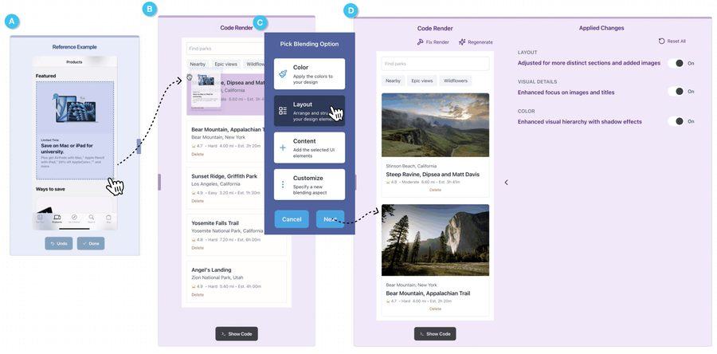
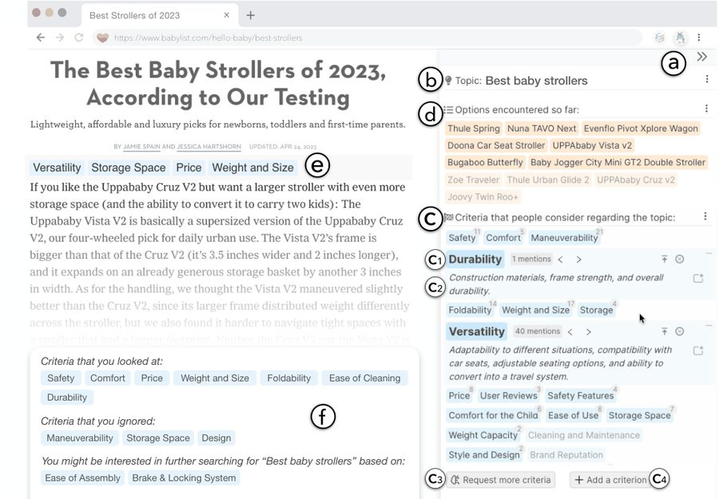
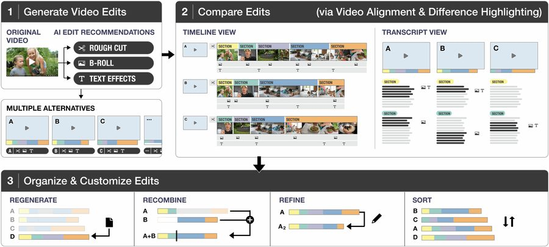
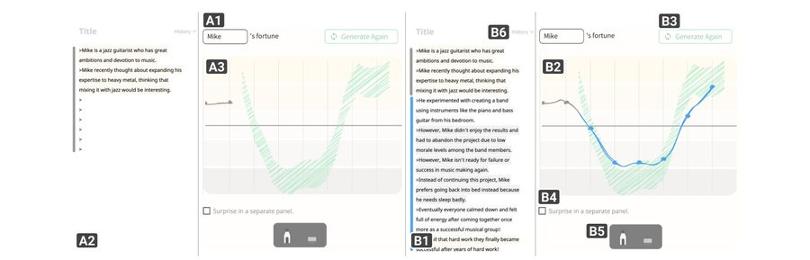

CHI 2025
Misty
Blend parts of example screenshots and sketches into a work-in-progress UI, then keep or undo each change the blend made.
Yuwen Lu, Alan Leung, Amanda Swearngin, Jeffrey Nichols, Titus Barik
Hackathon · UIST 2026 · 10:00 to 11:00
In groups of about three, you rebuild one paper’s system with a coding agent, from the paper alone. You grade the build against the rubric on this page (version 1), the agent fixes what you found, and you grade again (version 2). At 11:00 each table compares its revibes and picks one to remix. The method follows the “Revibing Code from Papers” paper.
Each table picks one paper, and every group at the table revibes it. The links are for you, not your agent: the agent works from the paper alone. Images: Figure 1 of each paper, by its authors.

CHI 2025
Blend parts of example screenshots and sketches into a work-in-progress UI, then keep or undo each change the blend made.
Yuwen Lu, Alan Leung, Amanda Swearngin, Jeffrey Nichols, Titus Barik

CHI 2024
An LLM drafts an overview of the options and criteria for an unfamiliar topic, then shows where each one comes up as you read web pages.
Michael Xieyang Liu, Tongshuang Wu, Tianying Chen, Franklin Mingzhe Li, Aniket Kittur, Brad A. Myers

CHI 2025
Generate several AI edits of a video (rough cuts, B-roll, text effects) and compare them side by side on aligned timelines and transcripts.
Mina Huh, Dingzeyu Li, Kim Pimmel, Hijung Valentina Shin, Amy Pavel, Mira Dontcheva

CHI 2022
Sketch a character’s rising and falling fortune as a line, and a language model writes a story that follows it.
John Joon Young Chung, Wooseok Kim, Kang Min Yoo, Hwaran Lee, Eytan Adar, Minsuk Chang
Fill this in once. The prompts, commands and rubric on this page adjust to your paper and group. Everyone in your group uses the same table and group.
codex and sign in with that account. Credits
expire 30 days after you redeem them. Please don’t share links.git clone --depth 1 <workshop repository>
cd uist2026-workshoppapers/<paper>/paper/The paper as Markdown, one file per section, with its figures. This is all your agent builds from.papers/videodiff/materials/Two short videos with transcripts, for VideoDiff only.AGENTS.md, CLAUDE.mdThe rules every group’s agent follows: read only the paper, never the authors’ code or videos, note what it assumed or substituted, and do one step at a time.llm-bridge/Lets the system you build call a language model through your agent and your plan, with no API key.prompts/The prompts from the “Revibing Code from Papers” method. This page has them too.revibes/<paper>/Where your work goes: the system in app/, the agent’s notes on each version in changes/, and your grades in grades/.Steps 1 to 3 show what the paper alone gets you. Step 5 shows what your grades add.
claude or
codex. That laptop runs the agent and the system you build.Send this prompt to your agent, unchanged. It comes from the “Revibing Code from Papers” method: the agent reads the paper, lists the system’s features and interface, builds it (a web app if it can), and writes a README on how to start it.
We are revibing [SystemName]. You will be implementing the [SystemName] system. This is based on a paper. The paper's content is split into markdown files and images in the 'paper' directory. Proceed in the following steps: (1) Analyze the features of the system and user interface (use the paper content and images) (2) Create a new implementation of the system that supports all the described features. Create this as a web app if you can, but you can use an alternative approach if the design calls for it (e.g., a Python backend). You may select alternative libraries or languages for implementation that deviate from those used in the paper. (3) When you are done, create a DEVELOPER.md that provides a detailed walkthrough of what a developer needs to know and install to run the system. Also, create a README.md that describes how to launch and use the system. Additional instructions: * You may ask questions if something is unclear but provide alternative choices. * If you need access to an API key, you can check for an available .env file. If the key does not exist, you can leave instructions in the .env file. Notify me, and I will fill it out. * It is ok to use roughly equivalent APIs (e.g., if the API calls for using a OpenAI model and you only have access to Gemini, you can use that)
Start the system as revibes/<paper>/app/README.md says. If you see errors, paste them to
your agent and ask it to fix them. Repeat until the system runs.
Ask your agent to check what it built against the paper and add what is missing. You can also try the system yourself and tell the agent which features are missing.
Then: restart the system (back to step 2 if it fails). The agent’s note on what it built is in revibes/<paper>/changes/v1.md.
Grade in the rubric below.
In the rubric, click Copy for the agent and paste it to your agent. The copy already asks it to fix what you graded partial or failure, using your notes. The first copy also keeps your version 1 score for your table.
Then: restart the system and check that it starts. This is version 2.
Try version 2 and change the grades that changed, starting with the tests that were partial or failed. Your table’s scores show both your first grades and where you are now.
An agent wrote these tests from the paper, and each one shows the section or figure it checks. Every group at your table grades the same tests. Keep one set of grades and update it after each fix.
Your table remixes the revibe it picked: change it on purpose to test an idea the paper did not.
The whole table works on one remix branch, remix/<paper>-<table>.
git fetch origin revibe/<paper>-<table>-group<picked group> git checkout -b remix/<paper>-<table> FETCH_HEAD git push origin remix/<paper>-<table>
git fetch origin remix/<paper>-<table> git checkout -b remix/<paper>-<table> FETCH_HEAD
revibes/<paper>/remixes.md. Agree at the table who changes which part, so you do not edit the same files.git pull --rebase origin remix/<paper>-<table> git push origin remix/<paper>-<table>